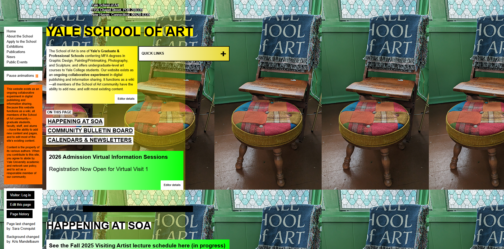

Original UI Example

Why This UI Was Ineffective
- Visual Overload: Too many competing colors and design elements make it difficult to focus.
- Unreadable Text: Poor contrast and inconsistent font sizes reduce legibility.
- Disorganized Layout: Elements appear scattered, disrupting the natural reading flow.
- No Hierarchy: Users can’t tell what’s important or interactive at first glance.
How It Can Be Improved
- Adopt a harmonious color palette with consistent use of accent tones.
- Establish visual hierarchy using spacing, font weight, and color contrast.
- Use a structured grid layout to align content and guide the reader’s eyes.
- Keep the design minimal yet expressive — let form follow function.